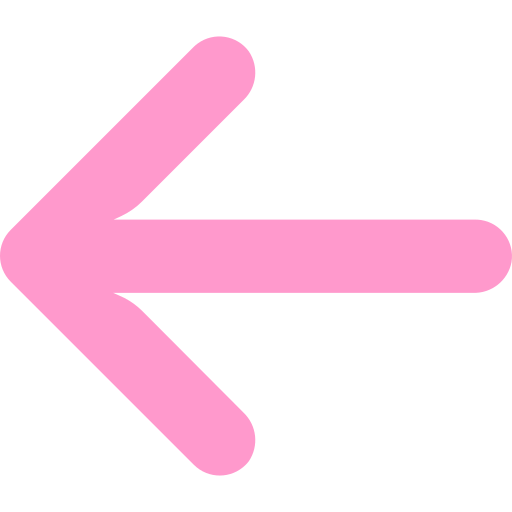

Heart Attack - UX/UI Design
The Heart Attack was a university project in which me and 3 friends had to create an original app or website idea and develop the user interface.
The idea we had for our application was something that united a drinking game with a social media. With Heart Attack you would be able to play a few different types of games in which you would need to take pictures of yourself and your friends. When the game is over you'll be able to chose which pictures you want to post in your timeline, this picture will be visible to everyone that follows you until you post something else.